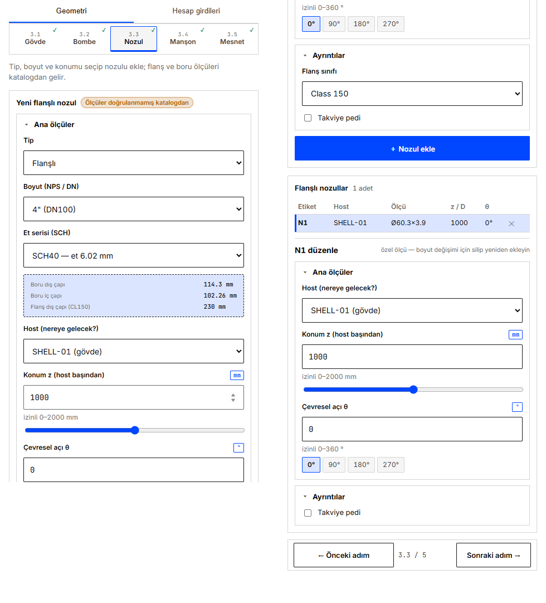
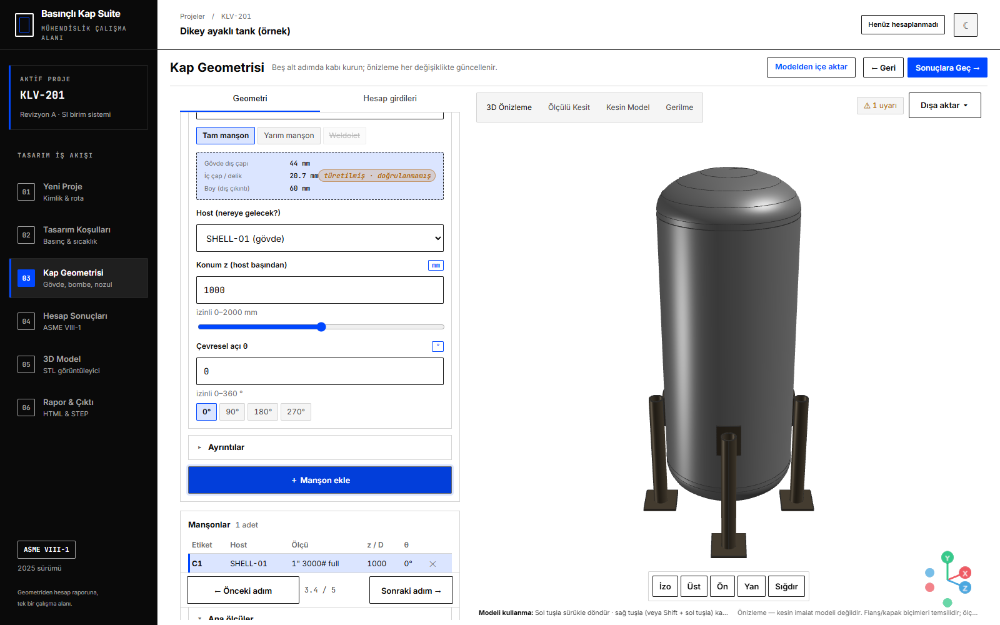
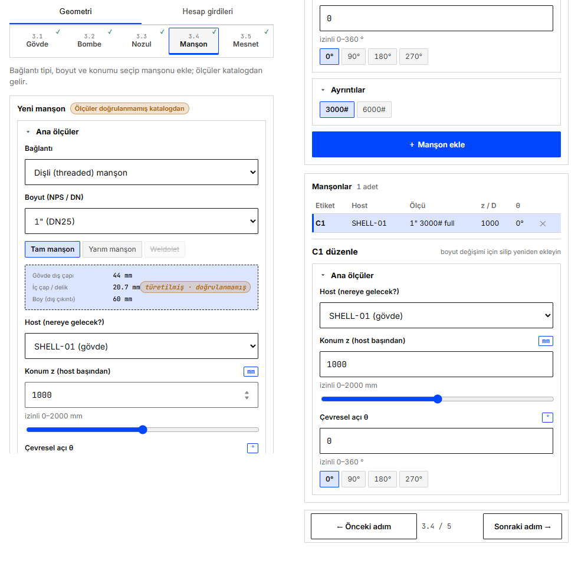
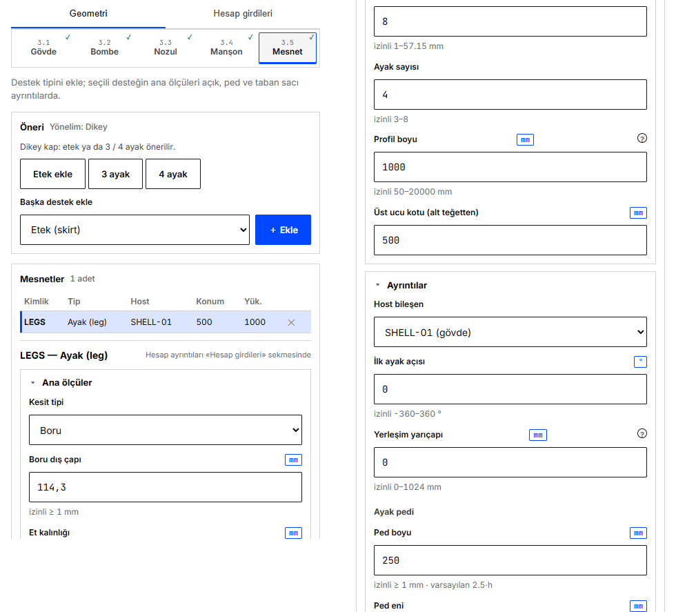
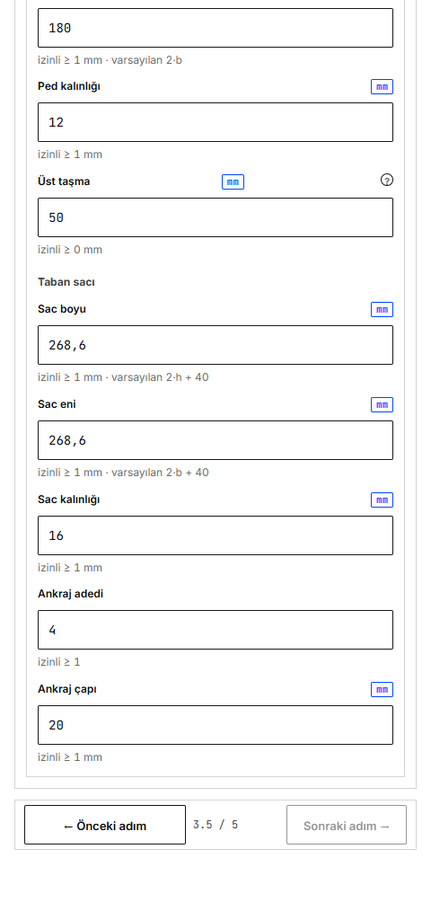
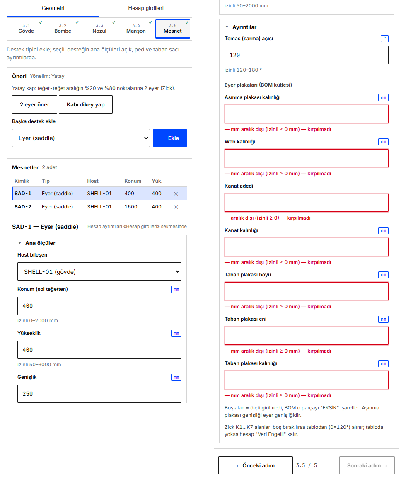
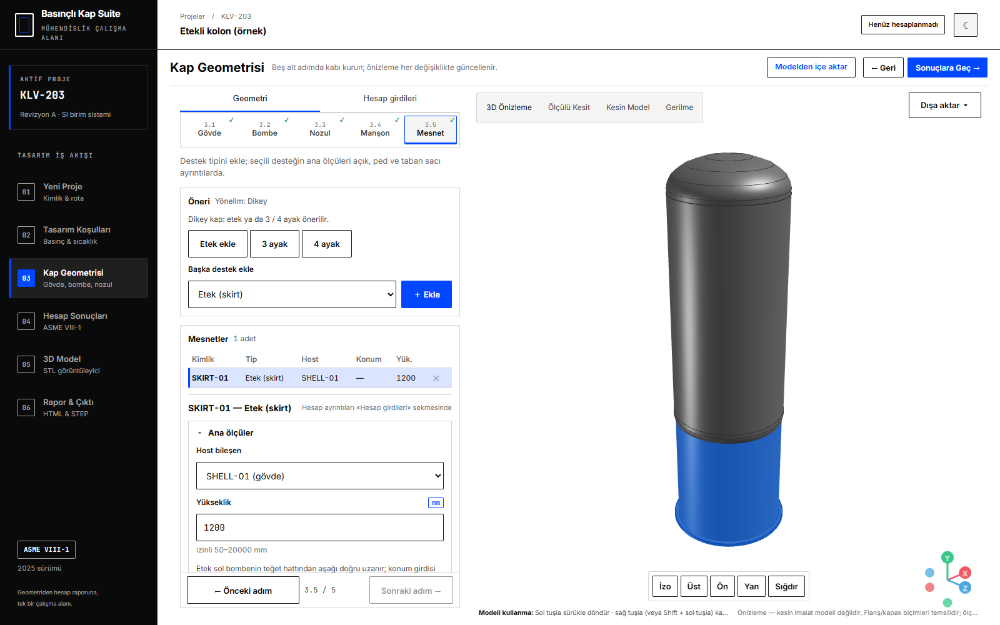

Bu ekran, basınçlı kabın üzerine akışkan girişi, çıkışı, tahliye hattı veya enstrüman bağlantısı sağlamak amacıyla kaynatılan flanşlı boru nozullarını (kabın boru tesisatına cıvatalarla bağlanmasını sağlayan flanşlı çıkış borularını) tanımlamak için kullanılır. Tesisatınızın gerektirdiği standart boru ve flanş ölçülerini seçtiğinizde, borunun dış çapı, iç çapı ve flanş boyutları standart kataloglardan sisteme otomatik olarak yüklenir ve kabın 3 boyutlu modeline işlenir. Bu sayede boru bağlantı noktalarınızın cidar üzerindeki yerleşimi ve delik takviye gereksinimleri hesaplamalara eksiksiz dahil edilir.
Şekil: 3.3 Flanşlı Nozul Ekranı Genel Görünümü

Şekil: 3.3 Yeni Flanşlı Nozul Formu ve Düzenleme Paneli
Flanşlı Nozul Alanları
Tip
Nozulun kabuk cidarında ve boru hattında nasıl bir birleşime sahip olacağını belirleyen bağlantı türüdür. Seçenekler: Flanşlı (standart kaynak boyunlu flanşa sahip nozul), Slip-on flanş (borunun flanş diski içine geçirilerek içten ve dıştan kaynaklandığı tip), Pedli takviyeli (delik etrafında gövde sacını destekleyen takviye sacı bulunan tip) ve Adam deliği (manway) (kabın içine bakım ve muayene amacıyla personelin girebilmesi için açılan büyük çaplı giriş deliği). Değer tesisat ve bakım şartnamesinden belirlenir; yanlış tip seçimi bağlantı mukavemetini, imalat maliyetini ve montaj yöntemini doğrudan etkiler.
Boyut (NPS / DN)
Nozul borusunun standart anma ölçüsüdür. Seçim listesinde inç cinsinden NPS (Nominal Pipe Size - anma boru boyutu) ve milimetre cinsinden DN (Diameter Nominal - anma çapı) eşdeğerleri (örneğin 4 inç için DN100) yer alır. Değer borulama projesinden veya P&ID (boru ve enstrüman şeması) belgelerinden alınır; boru ve flanşın standart dış çap, iç çap ve et kalınlığı ölçüleri bu seçime göre otomatik katalogdan doldurulur.
Et serisi (SCH)
Nozul borusunun duvar kalınlığını belirten Schedule (SCH) numarasıdır. Yaygın seçenekler arasında SCH40 (standart et kalınlığı), SCH80 (yüksek basınca dayanıklı kalın et) gibi seriler bulunur ve seçilen boyuta bağlı olarak milimetre cinsinden gerçek et kalınlığı seçenek yanında gösterilir. Tesisat basınç sınıfına ve mekanik dayanıma göre boru tablosundan seçilir; yetersiz bir seri seçilirse nozul boynu iç basınca dayanamayabilir.
Host (nereye gelecek?)
Nozulun kabın hangi gövde halkası veya bombe parçası üzerine monte edileceğini belirler. Seçenekler arasında silindirik gövde halkaları (SHELL), konik geçişler ve kabın iki ucundaki bombeler (uç kapaklar) yer alır. Nozulun bağlanacağı yer borulama yerleşim planına göre seçilmelidir; yanlış bileşen seçilirse nozul kabın hatalı bir bölgesine kaynatılır ve gerilme dağılımı bozulur.
Konum z (host başından) — gövde/koni host (mm)
Nozulun seçilen gövde veya koni halkasının başlangıç kenarından itibaren eksen boyunca olan mesafesidir. Formdaki kaydırıcı veya sayı kutusu üzerinden 0 ile seçilen host bileşenin toplam boyu arasında bir değer girilebilir. Değer doğrudan imalat ve yerleşim resminden alınmalıdır; sınırların dışında bir değer girilmesine izin verilmez ve nozul kaba eklenemez.
Yerleşim çapı (bombe ekseninden) — bombe host (mm)
(Bu alan yalnız şu durumda görünür: Host olarak bir uç bombe seçildiğinde görünür.) Nozulun bombenin tam tepe merkez noktasından ne kadar uzağa yerleştirileceğini belirten radyal yerleşim çapıdır. 0 değeri nozulun tam bombe merkezine (tepesine) yerleştiğini gösterir; izin verilen en yüksek değer bombenin iki katı yarıçap sınırıdır. Bombe üzerine merkez dışı nozul yerleştirilirken imalat resmindeki kaçıklık ölçüsü girilmelidir.
Çevresel açı θ (°)
Nozulun kap kesiti etrafındaki dairesel yönelim açısıdır (saat yönünde açısal konum). Arayüzdeki hızlı düğmelerle 0° (yatay kapta tam üst), 90° (sağ yan), 180° (tam alt) veya 270° (sol yan) olarak kolayca ayarlanabilir ya da 0 ile 360 derece arasında serbestçe girilebilir. Tesisat borularının kaba hangi yönden bağlanacağına göre belirlenir; yanlış girilirse boru hattı montajında hiza uyumsuzluğu yaşanır.
Flanş sınıfı
Nozul ucundaki flanşın basınca dayanım sınıfıdır (basınç kademesi). Seçenekler: Class 150, Class 300, Class 600, Class 900, Class 1500 ve Class 2500 olup standart ASME B16.5 flanş basınç-sıcaklık tablolarına dayanır. Tasarım basıncı ve sıcaklığına uygun sınıf borulama şartnamesinden seçilmelidir; düşük bir sınıf seçilirse flanş işletme basıncında sızdırma yapabilir veya deforme olabilir.
Takviye pedi
Nozul gövdeye kaynatılırken açılan deliğin zayıflattığı cidar bölgesini desteklemek üzere bir takviye sacı (halka ped) eklenip eklenmeyeceğini belirleyen onay kutusudur. Tip olarak "Pedli takviyeli" seçildiğinde bu onay kutusu zorunlu olarak işaretli gelir; diğer tiplerde isteğe bağlı olarak açılabilir. Açıklık takviye hesabı (delik açılınca kaybolan alanı telafi etme kontrolü) yetersiz kaldığında gövdeyi delik etrafında güçlendirmek için işaretlenir.
Ped dış çapı (ped açıkken) (mm)
(Bu alan yalnız şu durumda görünür: Takviye pedi onay kutusu işaretlendiğinde veya Tip "Pedli takviyeli" seçildiğinde görünür.) Açıklığı güçlendiren takviye sacı halkasının dış çapıdır. Varsayılan olarak boru dış çapının 2 katı hesaplanır ve izin verilen aralık boru dış çapının 1,1 katı ile 4 katı arasındadır. Takviye alanı ihtiyacına göre hesaplanarak belirlenir; çok küçük girilirse delik etrafındaki gerilmeleri karşılayamaz, çok büyük girilirse kaynak gerilmelerini artırır ve gereksiz ağırlık yapar.
Ped kalınlığı (ped açıkken) (mm)
(Bu alan yalnız şu durumda görünür: Takviye pedi onay kutusu işaretlendiğinde veya Tip "Pedli takviyeli" seçildiğinde görünür.) Takviye sacı plakasının milimetre cinsinden et kalınlığıdır. Varsayılan olarak bağlandığı host bileşenin et kalınlığı kadar alınır ve 1 ile 200 mm arasında bir değer girilebilir. İmalatta kullanılacak sac kalınlığına göre belirlenir; yetersiz girilirse gerilme takviyesi kuralları karşılamaz.
Host / z veya D / θ (seçili nozul) (mm/°)
Daha önce eklenmiş ve listeden seçilmiş bir nozulun bağlandığı bileşeni, eksenel mesafesini (veya bombe yerleşim çapını) ve çevresel açısını değiştirmeye yarayan düzenleme alanıdır. Nozulun yerini kaba göre yeniden ayarlamak için kullanılır; boru anma boyutu veya et serisi gibi temel boru boyutlarını değiştirmek için nozulu silip doğru boyutla yeniden eklemeniz gerekir.
Listeden seçilen mevcut bir nozulun takviye pedi durumunu açıp kapatmayı ve pedin dış çapı ile et kalınlığı değerlerini güncellemeyi sağlayan düzenleme grubudur. Hesaplama sonuçlarında delik takviyesinin yetersiz kaldığı görüldüğünde mevcut nozula sonradan ped eklemek veya ped ölçülerini revize etmek için kullanılır.
Satır silme (✕)
Flanşlı nozullar tablosunda ilgili satırın sağ tarafında yer alan silme düğmesidir. Yanlış eklenmiş, gereksiz veya boyutu değiştirilmek istenen bir nozulu projeden tamamen kaldırmak için tıklanır; silinen nozulun 3B modeldeki görseli ve tüm geometrik verileri derhal temizlenir.
Sık yapılan hatalar:
Host sınırlarını aşmak: Nozulun eksenel konumunu (z), üzerine takıldığı gövde parçasının toplam boyundan daha büyük girmek. Sistem sınır dışı değerleri otomatik kırpmaz, kırmızı uyarı verir ve nozulun eklenmesini engeller.
Boyut değiştirmek için düzenleme aramak: Eklenmiş bir nozulun boru çapını (NPS) veya et serisini düzenleme panelinden değiştirmeye çalışmak. Katalog yapısı gereği anma ölçüsünü değiştirmek için nozul silinip yeniden eklenmelidir.
Takviye pedini kontrol etmemek: Büyük çaplı nozullarda gövde cidarında açılan deliğin kabı zayıflattığını unutup takviye pedi tanımlamamak. Bu durum Adım 4 hesaplarında açıklık takviyesi kontrolünün başarısız olmasına yol açar.
3.4 Manşonlar
Bu ekran, basınçlı kabın üzerine küçük çaplı enstrüman bağlantıları, basınç göstergeleri (manometreler), tahliye ve havalandırma delikleri ile sensör yuvaları için kullanılan manşonları (küçük çaplı içi dişli veya soketli bağlantı parçalarını) eklemek için kullanılır. 1/2 inç ile 4 inç (DN15 ile DN100) arasındaki küçük boru ağızları bu adımda tanımlanır ve ölçüleri standart katalogdan otomatik çekilir. Eklenen manşonlar hem kabın 3 boyutlu modeline işlenir hem de malzeme listesine (BOM) dahil edilir.

Şekil: 3.4 Manşonlar Ekranı ve Eklenmiş Manşon Listesi

Şekil: 3.4 Yeni Manşon Formu ve Ölçü Düzenleme Paneli
Manşon Alanları
Bağlantı
Manşonun tesisat borusu veya göstergeyle nasıl birleştirileceğini belirten uç tipidir. Seçenekler: Dişli (threaded) manşon (içine diş açılmış, vidalanarak bağlanan tip) ve Soket kaynaklı (socket weld) (borunun manşon yuvasına oturtulup boğazından köşe kaynağıyla kaynatıldığı tip). Tesisatta kullanılacak enstrüman veya boru ucuna göre seçilir; yanlış seçim şantiyede montajın yapılamamasına neden olur.
Boyut (NPS / DN)
Manşonun standart anma çapıdır. Sistemde 1/2 inçten 4 inçe kadar (DN15 ile DN100 aralığında) standart dövme çelik manşon boyutları sunulur. Bağlanacak cihazın (örneğin basınç transmitteri, seviye göstergesi, drenaj vanası) bağlantı çapına göre belirlenir; bu seçimle birlikte manşonun dış çapı, delik çapı ve boyu katalogdan kendiliğinden türetilir.
Manşon formu
Manşon gövdesinin geometrik yapısını ve boyunu belirler. Seçenekler: Tam manşon (her iki ucu da bağlantıya uygun tam boy manşon), Yarım manşon (bir ucu kap cidarında kaynak ağzı açılmış kısa boy manşon; genellikle kaplarda bu tip kullanılır) ve Weldolet (gövdeye doğrudan kaynatılan özel takviyeli dövme branşman elemanı; bu sürümde katalogda bulunmadığı için devre dışıdır). İmalat projesindeki parça tanımına göre seçilmelidir.
Host (nereye gelecek?)
Manşonun hangi gövde halkası, koni parçası veya uç bombe üzerine kaynatılacağını belirler. Projedeki silindirik kabuk parçaları ve kapaklar listeden seçilebilir. Yanlış host seçilirse gösterge veya drenaj ağzı kabın yanlış yerine yerleşir (örneğin drenaj manşonunun kabın en altı yerine üstüne yerleşmesi gibi).
Konum z (host başından) / Yerleşim çapı (bombe) (mm)
Manşonun eksenel veya radyal montaj yerini belirler. Host olarak gövde veya koni seçildiğinde o parçanın sol/alt başlangıcından itibaren eksen boyunca mesafeyi (z), host olarak bombe seçildiğinde ise bombe tepe ekseninden olan radyal yerleşim çapını ifade eder. Cihaz yerleşim planına göre girilir; host parçasının fiziksel boyu veya bombe yarıçapı dışına taşan değerler kabul edilmez.
Çevresel açı θ (°)
Manşonun kap çevresi üzerindeki dairesel konum açısıdır. Arayüzde yer alan 0° (yatay kapta tam üst), 90° (sağ yan), 180° (tam alt / drenaj) ve 270° (sol yan) hızlı seçim düğmeleriyle veya elle 0 ile 360 derece arasında girilebilir. Örneğin bir tahliye ve boşaltma manşonu kabın en alt noktasına (180°) konulurken, bir hava alma manşonu en üst noktaya (0°) konulmalıdır.
Sınıf
Dövme çelik manşonun basınca dayanım sınıfıdır (rating). Seçenekler: 3000# (3000 psi sınıfı, yaygın basınç aralıkları için) ve 6000# (6000 psi sınıfı, çok yüksek basınçlı uygulamalar için). Tasarım koşullarındaki iç basınca ve borulama spesifikasyonuna göre seçilir; düşük sınıf seçilirse manşon yüksek basınç altında cidar zayıflığına yol açabilir.
Host / z / θ (seçili manşon) (mm/°)
Eklenmiş manşonlar tablosundan seçilen bir manşonun yerleşim yerini güncellemeye yarayan form alanıdır. Manşonun bağlı olduğu ana parçayı, eksenel veya radyal mesafesini ve çevresel açısını değiştirmek için kullanılır; manşonun anma çapını veya bağlantı tipini değiştirmek için manşon listeden silinip yeniden eklenmelidir.
Sık yapılan hatalar:
Drenaj ve havalandırma açısını karıştırmak: Boşaltma (drenaj) manşonunu yatay kapta 180° (tam alt) yerine 0° (tam üst) açısına yerleştirmek. Bu durumda kap içindeki sıvı yerçekimiyle tahliye edilemez.
Katalogda olmayan kombinasyon seçmek: Belirli boyut ve sınıflarda soket veya dişli ölçüleri katalogda bulunmadığında sistemin kırmızı uyarı vermesine rağmen formu onaylamaya çalışmak. Katalogda yer almayan özel ölçüler için uyarı dikkate alınmalıdır.
Boyut düzenlemesi aramak: Eklenmiş bir manşonun 1 inç olan boyutunu 2 inç yapmak için düzenleme kutusuna bakmak. Manşon boyutları silinip yeniden eklenerek değiştirilir.
3.5 Mesnetler (Ayak, Eyer, Etek)
Bu ekran, basınçlı kabın tüm ağırlığını, içindeki akışkan kütlesini ve rüzgar veya deprem gibi dış yükleri zemine güvenle aktaran mesnetlerin (taşıyıcı destek yapılarının) tanımlandığı bölümdür. Kabın yönelimine (yatay veya dikey) bağlı olarak akıllı öneri düğmeleri devreye girer: yatay kaplar için 2 adet eyer (saddle - beşik biçimli destek), dikey kaplar için silindirik etek (skirt - gövdeyi saran silindir ayak) veya taşıyıcı ayaklar (leg - kolon biçimli bacaklar) kolayca oluşturulur. Seçilen desteğin kesit ölçüleri, takviye pedleri ve taban sacı ankraj detayları burada girilir.
Şekil: 3.5 Mesnet Ekranı, Öneri Düğmeleri ve Mesnet Listesi

Şekil: 3.5 Ayak Mesnet Formu, Kesit, Ped ve Taban Sacı Detayları

Şekil: 3.5 Ayak Mesnet Formu, Kesit, Ped ve Taban Sacı Detayları (devam)Şekil: 3.5 Yatay Kap Eyer Mesnet Ekranı

Şekil: 3.5 Eyer Mesnet Formu ve Ölçü Tanımları

Şekil: 3.5 Etek Kolon Mesnet EkranıŞekil: 3.5 Etek Mesnet Formu
3.5.1 Mesnet Öneri ve Ekleme Alanları
Öneri düğmeleri
Kabın dikey veya yatay yönelimine göre mühendislik standartlarına en uygun destek tiplerini tek tıkla projeye ekleyen hızlı eylem düğmeleridir. Seçenekler: Etek ekle (dikey kule ve ağır tanklar için tam boy silindirik etek desteği oluşturur), 3 ayak (dikey kaplar için 120° aralıklı üç taşıyıcı ayak yerleştirir), 4 ayak (dikey) (dikey kaplar için 90° aralıklı dört taşıyıcı ayak yerleştirir), 2 eyer öner (yatay kaplar için teğet-teğet boyunun %20 ve %80 noktalarına Zick yöntemine uygun 2 adet eyer mesnet ekler) ve Kabı dikey yap (yatay) (yanlışlıkla yatay seçilmiş kabın yönelimini tek tıkla dikeye çevirir). Tasarım başlangıcında doğru yerleşimi otomatik kurmak için kullanılır.
Başka destek ekle
Öneri düğmeleri dışındaki özel durumlarda veya ilave mesnet tanımlamak istendiğinde destek tipini manuel seçip eklemeyi sağlayan seçim menüsüdür. Seçenekler: Eyer (saddle) (yatay silindirik kapları alttan beşik gibi saran taşıyıcı), Etek (skirt) (dikey kapların altını çepeçevre saran silindirik sac destek) ve Ayak (leg) (dikey kapları yerden yükselten bacaklar). Yönelimle uyumsuz bir seçim yapıldığında (örneğin dikey kapta eyer veya yatay kapta etek) sistem uyarı verir ancak eklemeyi engellemez.
3.5.2 Ayak Tipi Mesnet Ölçüleri
Kesit tipi
Taşıyıcı ayakların imal edileceği çelik profilin kesit geometrisini belirler. Seçenekler: Boru (dairesel içi boş çelik boru kesit), U profil (UPN) (standart U kesitli hadde çeliği), Kutu profil (kare veya dikdörtgen içi boş yapısal profil) ve Köşebent (L) (L kesitli eşit kollu köşebent çeliği). Projenin statik taşıma kapasitesine ve atölye imkanlarına göre seçilir; kesit tipine göre ekrandaki profil ölçü alanları dinamik olarak güncellenir.
Hazır UPN seç (EN 10279)
(Bu alan yalnız şu durumda görünür: Ayak kesit tipi "U profil (UPN)" seçildiğinde görünür.) Avrupa standardı EN 10279 kapsamındaki standart U profillerini (örneğin UPN 80, UPN 120, UPN 160 gibi) listeden seçmeyi sağlar. Seçenekler arasında standart profiller ve — elle gir — seçeneği bulunur. Hazır profil seçildiğinde yükseklik, genişlik, gövde ve flanş et kalınlıkları otomatik dolar; istenirse değerler sonradan elle de revize edilebilir.
U yönü
(Bu alan yalnız şu durumda görünür: Ayak kesit tipi "U profil (UPN)" seçildiğinde görünür.) U kesitli profilin kabın gövdesine ve takviye sacına hangi yüzeyinden kaynatılacağını belirler. Seçenekler: Sırtı pede (U profilin düz arka sırt yüzeyi takviye sacına bakar) ve Kanatlar pede (U profilin iki yan flanş ucu takviye sacına bakar). Kaynak mukavemeti ve burkulma ekseni hesabında doğrudan etkilidir; projede öngörülen montaj biçimine göre seçilmelidir.
Boru dış çapı (mm)
Kesit tipi boru olan ayakların milimetre cinsinden dış çapıdır. Çelik boru imalat ölçülerine göre belirlenir ve en az 1 mm olmalıdır (tipik olarak 88,9 mm, 114,3 mm gibi borular kullanılır). Ayakların düşey yükler altında burkulma ve eğilme mukavemetini doğrudan belirler; çok ince bir boru seçilirse ayak basma gerilmesine dayanamayıp bel verebilir.
Et kalınlığı (mm)
Kesit tipi boru olan ayakların milimetre cinsinden cidar (duvar) et kalınlığıdır. İzin verilen değer 1 mm ile boru dış çapının yarısı arasındadır. Yetersiz et kalınlığı girilirse ayak borusu ezilme veya burkulma kontrollerinden geçemez.
Profil yüksekliği h (mm)
(Bu alan yalnız şu durumda görünür: Ayak kesit tipi "Kutu profil" veya "Köşebent (L)" seçildiğinde görünür.) Profil kesitinin dıştan dışa toplam düşey yüksekliğidir. Satın alınacak standart kutu profil veya köşebent kataloğundan alınır (tipik olarak 80 mm, 100 mm, 150 mm). Ayak kesit alanını ve atalet momentini (eğilmeye karşı direncini) doğrudan etkiler.
Kanat genişliği b (mm)
(Bu alan yalnız şu durumda görünür: Ayak kesit tipi "Kutu profil" veya "Köşebent (L)" seçildiğinde görünür.) Profil kesitinin dıştan dışa toplam genişliğidir. Kare kutu profillerde veya eşit kollu köşebentlerde genellikle profil yüksekliği (h) ile aynıdır. Profil tablosundan alınır; yanlış girilirse takviye pedi ve taban sacı boyutlandırma hesapları hatalı çıkar.
Ayak sayısı (adet)
Kabı taşıyacak toplam bacak adedidir. İzin verilen aralık 3 ile 8 ayak arasındadır (en yaygın 3 veya 4 ayak tercih edilir). 3 ayak zemindeki oturma bozukluklarına karşı statik olarak her zaman tam temas sağlarken, 4 ayak daha simetrik ve yüksek devrilme emniyeti sunar. Kabın ağırlığı girilen ayak sayısına bölünerek her bir ayağa düşen dikey yük hesaplanır.
Profil boyu (mm)
Taşıyıcı ayağın üst ucundan zemindeki taban plakasına kadar olan toplam serbest boyudur. İzin verilen aralık 50 ile 20000 mm arasındadır. Kabın altındaki vanaların, boruların ve bakım personelinin rahat çalışabilmesi için gerekli alt boşluk mesafesine göre belirlenir; boy uzadıkça burkulma riski artacağından profil kesitinin de büyütülmesi gerekebilir.
Ayağın kabın gövdesine bağlandığı üst ucunun referans çizgisine göre olan montaj kotudur. Dikey kaplarda alt bombenin teğet hattından (silindirin başladığı çizgiden) yukarıya doğru olan mesafeyi, yatay kaplarda ise sol teğet hattından olan mesafeyi belirtir. Ayakların gövde kaynak dikişlerine veya bombe geçişlerine çok yakın olmaması için imalat çizimindeki yerleşim ölçüsüne göre girilmelidir.
Host bileşen
Ayakların doğrudan kaynatılacağı ana kap bileşenidir. Seçenekler arasında silindirik gövde halkaları ve alt bombe yer alır. Ayakların yükü kabın silindirine mi yoksa alt bombesine mi aktaracağını belirler; yanlış host seçilirse mesnet kabın alakasız bir yerine bağlanır ve sonlu elemanlar / lokal gerilme analizleri boşa çıkar.
Profil yüksekliği h + Kanat genişliği b (iki alan) (mm)
(Bu alan yalnız şu durumda görünür: Ayak kesit tipi "U profil (UPN)" seçildiğinde Ayrıntılar grubunda görünür.) U profilin kesit yüksekliğini (h) ve flanş genişliğini (b) milimetre cinsinden ifade eden iki ayrı giriş alanıdır. Hazır UPN seçildiğinde katalogdan otomatik gelir veya özel bir profil kullanılıyorsa elle girilir. Profilin bükülme rijitliğini ve temas genişliğini belirler.
Et kalınlığı (mm)
(Bu alan yalnız şu durumda görünür: Ayak kesit tipi "Köşebent (L)" seçildiğinde Ayrıntılar grubunda görünür.) Köşebent profilin kanat et kalınlığıdır. Çelik profil tablosundan veya malzeme sertifikasından alınır; en az 1 mm olmalıdır. Yetersiz girilirse köşebent ayağın taşıma kapasitesi yetersiz kalır.
Gövde kalınlığı tw (mm)
(Bu alan yalnız şu durumda görünür: Ayak kesit tipi "U profil" veya "Kutu profil" seçildiğinde Ayrıntılar grubunda görünür.) Profilin orta gövde sacı (web) et kalınlığıdır. U profillerde izin verilen aralık 0,1 mm ile profil yüksekliğinin yarısı (h/2) arasındadır. Standart çelik tablosundan alınır; kesitin dikey kesme ve ezilme dayanımını sağlar.
Kanat kalınlığı tf (mm)
(Bu alan yalnız şu durumda görünür: Ayak kesit tipi "U profil" veya "Kutu profil" seçildiğinde Ayrıntılar grubunda görünür.) Profilin yan flanş (kanat) et kalınlığıdır. U profillerde izin verilen aralık 0,1 mm ile kanat genişliği (b) arasındadır. Profil tablosundan girilir; flanşın eğilme mukavemetini belirler.
İlk ayak açısı (°)
İlk ayağın kap çevresinde yerleşeceği başlangıç açısıdır; diğer ayaklar bu açıdan başlayarak eşit açılarla (örneğin 4 ayakta 90° arayla) çevreye dağıtılır. İzin verilen aralık -360° ile +360° arasındadır. Kabın üzerindeki nozullarla, seviye göstergeleriyle veya menhollerle ayakların çakışmasını önlemek için başlangıç açısı buradan kaydırılır.
Yerleşim yarıçapı (mm)
Ayak eksenlerinin kabın merkez ekseninden olan yatay uzaklığıdır. 0 girildiğinde sistem bunu otomatik olarak hesaplar (kabın dış yarıçapı + ped kalınlığı + profil genişliğinin yarısı). Ayakların kabuktan dışarıya doğru açılı veya uzakta yerleştirildiği özel konsol tasarımlarında elle değer girilebilir; yanlış girilirse devrilme momenti ve eksantrisite hesabı hatalı çıkar.
Ped boyu (mm)
Ayağın kabukla temas ettiği bölgeye kaynatılan takviye sacının (ped) düşey uzunluğudur. Boş bırakıldığında profil yüksekliğinin 2,5 katı (2,5·h) olarak otomatik varsayılır. Bu ped, ayağın kabuk cidarında noktasal ezilme ve yüksek lokal gerilme oluşturmasını engeller; cidar gerilme kontrolünün güvenle geçmesi için yeterli boyda seçilmelidir.
Ped eni (mm)
Ayak takviye sacının yatay genişliğidir. Boş bırakıldığında profil genişliğinin 2 katı (2·b) olarak otomatik hesaplanır. Profilin her iki yanından kaynak dikişinin rahatça atılabilmesi için profil kanat genişliğinden daima daha geniş olmalıdır.
Ped kalınlığı (mm)
Ayak takviye sacının milimetre cinsinden et kalınlığıdır. Varsayılan olarak 10 mm önerilir ve en az 1 mm olmalıdır. Genellikle kabın kendi gövde sacı kalınlığına yakın veya eşit seçilir; ince seçilirse ayağın momentini gövdeye yayamaz ve bükülür.
Üst taşma (mm)
Takviye sacının, profil ayağın bittiği üst uç noktasından yukarıya doğru devam eden payıdır. Varsayılan değeri 50 mm'dir ve en az 0 mm olabilir. Ayağın bittiği tepe noktasında ani gerilme yığılmasını yumuşatmak için ped sacının bir miktar yukarı taşması mühendislik açısından zorunludur.
Sac boyu (mm)
Ayağın altına, beton temele oturması için kaynatılan taban plakasının (base plate) uzunluğudur. Varsayılan olarak profil yüksekliğinin 2 katı artı 40 mm (2·h + 40) formülüyle otomatik üretilir. Ayağın tüm yükünü betona yayarak betonun ezilmesini önler; ankraj cıvatalarının sığacağı genişlikte olmalıdır.
Sac eni (mm)
Taban plakasının milimetre cinsinden genişliğidir. Varsayılan olarak profil genişliğinin 2 katı artı 40 mm (2·b + 40) olarak belirlenir. Taban sacı alanının beton ezilme emniyet gerilmesini aşmayacak büyüklükte olması şarttır.
Sac kalınlığı (mm)
Taban plakasının et kalınlığıdır. Varsayılan değeri 16 mm'dir ve en az 1 mm girilmelidir. Dikey yüklerin ve ankraj cıvatası çekme kuvvetlerinin etkisiyle taban sacının yukarıya doğru bükülmesini (çanaklaşmasını) önleyecek rijitlikte seçilmelidir.
Ankraj adedi (adet)
Her bir ayağın taban sacını beton temele sabitleyen temel cıvatası (ankraj bulonu) sayısıdır. En az 1 adet girilebilir; tipik olarak her ayak tabanına 2 veya 4 adet ankraj yerleştirilir. Rüzgar, deprem veya devrilme anında ayağın temelden havalanmasını ve kaymasını engeller.
Ankraj çapı (mm)
Temel cıvatalarının anma diş çapıdır (örneğin M20, M24 için 20 mm, 24 mm). Varsayılan olarak 20 mm alınır. Devrilme anında çekme gerilmesine, rüzgar/deprem anında ise kesme kuvvetine maruz kalır; statik hesap raporunda izin verilen gerilmelerle doğrulanır.
3.5.3 Eyer ve Etek Tipi Mesnet Ölçüleri
Host bileşen
Eyer (saddle) veya etek (skirt) mesnedin monte edileceği kap elemanıdır. Eyer mesnetler geometrisi gereği yalnız silindirik gövde parçaları (shell) üzerine oturabilir; etek mesnetler ise kule kabın alt bombesine veya alt gövdesine bağlanır. Yanlış host seçilirse mesnet montaj hattı geometrisi kurulamaz.
Konum (sol teğetten) (mm)
Yatay kapta eyer mesnedin kabın sol teğet çizgisinden (sol bombenin silindire birleştiği teğet hattından) olan mesafesidir. Varsayılan olarak teğet aralığının %20'si ve %80'i önerilir; girilen değer host gövde sınırları içinde kalmalıdır. Zick yöntemine göre eyerin bombe teğetine olan mesafesi (A mesafesi) kiriş eğilme momentlerini ve bombe takviye etkisini doğrudan belirler.
Yükseklik (mm)
Mesnedin temel oturma yüzeyinden kap tabanına veya eksenine kadar olan düşey yüksekliğidir. Eyer mesnet için izin verilen aralık 50 ile 3000 mm, etek mesnet için 50 ile 20000 mm arasındadır. Etek mesnetlerde yükseklik kolonun altındaki borulama ve pompa boşluğunu belirlerken, eyerde kabın zeminden yüksekliğini sağlar. Etekte ayrıca konum girdisi kullanılmaz, etek daima alt teğetten aşağı uzanır.
Genişlik (mm)
Eyer mesnedin kap eksenine dik doğrultudaki temas genişliğidir (sac temas şeridi genişliği). İzin verilen aralık 50 ile 2000 mm arasındadır (tipik değer 200 mm civarıdır). Genişlik arttıkça eyer altındaki temas alanı genişler ve kabuk üzerindeki ezilme/yerel basma gerilmeleri düşer.
Temas (sarma) açısı (°)
Eyer mesnedin yatay silindirik kabı alttan kaç derecelik yay boyunca kucakladığını belirten sarma açısıdır (θ). İzin verilen aralık 120° ile 180° arasındadır; endüstri standardı ve asgari değer 120°'dir. Sarma açısı 120 derecenin altına düşürülemez; açı büyüdükçe (örneğin 150° veya 180°) kabuk teğetsel gerilmeleri ve eyer boynuzu eğilme gerilmeleri önemli ölçüde azalır.
Aşınma plakası kalınlığı (mm)
Eyer mesnet ile kabuk arasına kaynatılan takviye sacının (doubler / wear plate) et kalınlığıdır. Boş bırakıldığında malzeme listesinde (BOM) parça "EKSİK" olarak işaretlenir. Sıcaklık genleşmelerinde kabuğun sürtünmeden aşınmasını önler ve kabuk cidarını yerel yüklemelere karşı güçlendirir.
Web kalınlığı (mm)
Eyer mesnedin dikey ana gövde plakasının (web sacı) et kalınlığıdır. Boş bırakılırsa BOM ağırlık hesabında eksik kabul edilir. Eyerin tüm kap ağırlığını eğilmeden zemine aktarmasını sağlayan ana taşıyıcı sacdır.
Kanat adedi (adet)
Eyer gövde sacını (web) dikey olarak destekleyen ve burkulmasını önleyen üçgen kaburga (rijitlik kanadı / rib) sayısıdır. Boş bırakılırsa parça BOM'da eksik işaretlenir. Geniş eyerlerde web sacının yanal bükülmesini önlemek için belirli aralıklarla kanat eklenir.
Kanat kalınlığı (mm)
Eyer rijitlik kanatlarının (rib sacları) milimetre cinsinden kalınlığıdır. Boş bırakılırsa BOM hesabında eksik işaretlenir. Web sacına destek veren bu kanatların kalınlığı mesnet rijitliğini korur.
Taban plakası boyu (mm)
Eyer mesnedin beton temele oturan alt taban sacının kap eksenine dik doğrultudaki toplam boyudur. Boş bırakılırsa BOM'da eksik işaretlenir. Temas alanını büyüterek beton ezilme basıncını düşürür ve ankraj cıvatalarına montaj payı sağlar.
Taban plakası eni (mm)
Eyer taban sacının kap eksenine paralel doğrultudaki genişliğidir. Boş bırakılırsa BOM'da eksik işaretlenir. Eyerin zemine oturma dengesini ve boyuna rüzgar/deprem devrilme direncini belirler.
Taban plakası kalınlığı (mm)
Eyer taban sacının et kalınlığıdır. Boş bırakılırsa BOM'da eksik işaretlenir. Ankraj cıvataları sıkıldığında veya devrilme kuvveti geldiğinde sacın eğrilmesini önleyecek kalınlıkta seçilmelidir.
3.5.4 Mesnet Listesi İşlemleri
Satır silme (✕)
Mesnetler tablosunda tanımlı olan bir ayağı, eyeri veya eteği projeden tamamen silen kaldırma düğmesidir. Yanlış eklenen bir desteği kaldırmak veya tipi değiştirmek için kullanılır; silinen desteğin 3B modeldeki görüntüsü ve hesap girdileri sistemden derhal temizlenir.
Sık yapılan hatalar:
Sarma açısını 120° altına düşürmek: Zick standardına göre eyer temas açısının asgari 120° olması şarttır; daha küçük açı girilmesine izin verilmez çünkü eyer boynuzu bölgesinde aşırı gerilme yığılması oluşur.
Yönelim ve destek tipi uyumsuzluğu: Yatay bir kapta ayak veya etek tanımlamak ya da dikey kapta eyer eklemek. Sistem bu durumda sarı ikaz verir; yatay kaplarda eyer, dikey kaplarda etek veya ayak tercih edilmelidir.
Eyer plakalarını boş bırakıp BOM beklemek: Aşınma plakası, web veya taban sacı kalınlıklarını girmeden malzeme listesi (BOM) kütlesi hesaplatmaya çalışmak. Boş bırakılan alanlar malzeme listesinde "EKSİK" olarak işaretlenir.